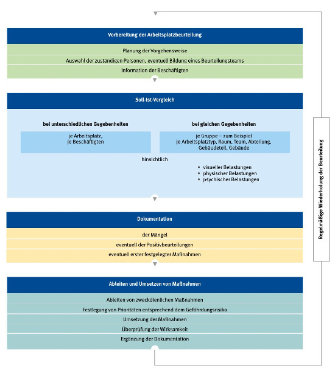

Durch die Beurteilung der Arbeitsbedingungen sind die Belastung und alle Gefährdungen, die die Gesundheit der Beschäftigten negativ beeinflussen können, zu ermitteln.
Die Beurteilung kann vom Betrieb selbst vorgenommen werden. Der Arbeitgeber sollte dabei die betrieblichen Arbeitsschutzexperten (Betriebsärzte und Fachkräfte für Arbeitssicherheit) sowie die Beschäftigten einbeziehen. Eine rechtlich verbindliche Methode zur Durchführung einer Gefährdungsbeurteilung ist nicht vorgegeben. Die generelle Vorgehensweise zur Durchführung einer Gefährdungsbeurteilung ist in der ASR V3 "Gefährdungsbeurteilung" beschrieben. Häufig genügt ein Soll-Ist-Vergleich zwischen den Arbeitsbedingungen durch eine Inaugenscheinnahme vor Ort und den Anforderungen aus dem Vorschriften- und Regelwerk – zum Beispiel mithilfe einer Checkliste.
Die Beurteilung der Arbeitsbedingungen kann zum Beispiel wie folgt durchgeführt werden:
Die Beurteilung ist in regelmäßigen Zeitabständen zu wiederholen. Auch bei wesentlichen Änderungen am Arbeitsplatz, wie neuen Arbeitsmitteln (auch Software), Umgestaltung des Arbeitsplatzes und der Arbeitsumgebung sowie bei Beschwerden, die auf die Tätigkeit am Bildschirmarbeitsplatz zurückgeführt werden können, ist eine erneute Beurteilung erforderlich (Abbildung 7).

Abb. 7 Ablauf einer Arbeitsplatzbeurteilung
Weitere Literatur
|